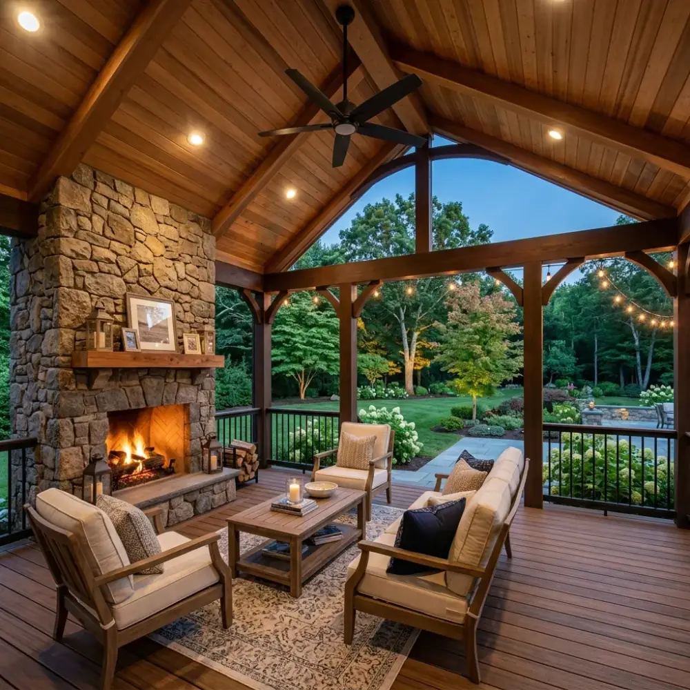
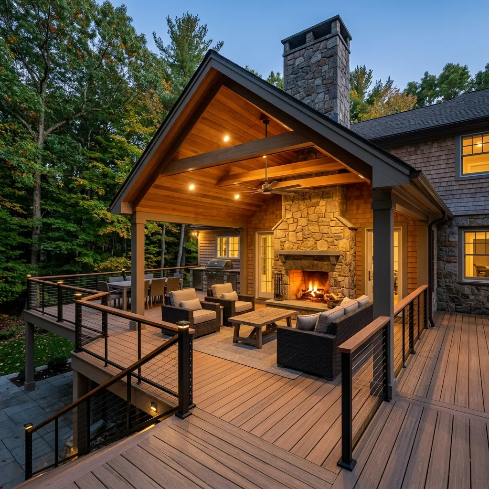

Cozy, architecturally integrated structures designed to extend your living space across all seasons.
YEAR-ROUND ENJOYMENT
Cozy Comfort in Any Season
New England weather can be unpredictable, but a covered porch or outdoor room gives you the freedom to enjoy your backyard regardless of rain, hot sun, or autumn chill. We design and build covered living spaces that feel like a seamless extension of your home's interior.
From screened porches with clean, floor-to-ceiling vistas to open-air pavilions featuring custom cedar tongue-and-groove ceilings, stone fireplaces, and integrated heaters, we craft functional retreats where luxury meets comfort.

UNCOMPROMISING LUXURY
Integrated Architectural Elements
We pay close attention to the details that make an outdoor room feel comfortable and premium. Every roof line is engineered to tie cleanly into your home's existing roof, matching shingles, trim, and gutters perfectly.
Finished Cedar Ceilings: Warm, natural cedar tongue-and-groove panels finished with weather-resistant sealers.
Screen & Window Options: High-clarity screens, motorized retractable screens, or removable vinyl window panels for multi-season flexibility.
OUR PROJECTS
Recent Covered Outdoor Rooms
Explore a selection of our covered porches and customized open-air pavilions built for local Massachusetts homes.

Weston Covered Porch
Weston, MA
Chestnut Hill Pavilion
Chestnut Hill, MA
Custom Screened Porch
Wellesley, MA
FAQ
Common Questions About Covered Porches
A screened porch uses mesh screens, allowing complete airflow and breeze while keeping insects out. A three-season room incorporates glass or vinyl window panels and screens, shielding you from wind, rain, and colder temperatures, allowing you to use the space comfortably from early spring to late autumn.
Absolutely. We specialize in building integrated masonry and stone fireplaces (both wood-burning and gas-powered). We also handle pre-wiring for outdoor-rated TVs, sound systems, and internet connections, ensuring all electronics are properly protected from the elements.
During the architectural design phase, we match the roof pitch, shingles, gutters, and trim details of your existing house. The goal is for the finished structure to look like it was built with the house, not added on years later.
Start Designing Your Covered Retreat
Schedule a private on-site consultation to discuss your ideas and requirements.